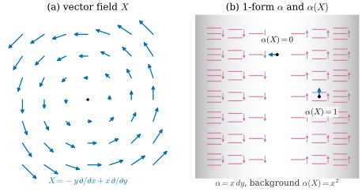
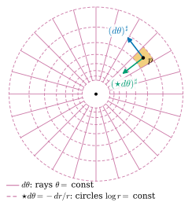

35.1 Differential Forms
Goals
- vector field와 differential 1-form을 구분하고, 1-form을 vector field에 적용해 함수를 얻을 수 있다.
- differential \(k\)-form을 “점마다 붙인 \(k\)-form”으로 정의하고, coordinate basis \(dx^I\)로 쓰며, smooth한지를 coefficient로 판정할 수 있다(어느 coframe으로 판정해도 같다).
- \(\wedge\), \(\star\), \(\sharp\), \(\flat\)을 점마다 적용해 계산할 수 있다. 예: \(\R^2\)의 \(\star dx = dy\), \(\star dy = -dx\), volume form과 \(\star 1\).
- polar coordinates의 \(dr, d\theta\)와 그 Hodge star \(\star dr = r\,d\theta\), \(\star d\theta = -dr/r\), \(\star 1 = r\,dr\wedge d\theta\)를 계산할 수 있다.
Prerequisites
- Definition 34.4.2 (k-form on a vector space), Lemma 34.4.5 (basis k-forms), Theorem 34.4.6, Proposition 34.4.11 (Hodge star on k-forms)
- Proposition 34.5.2 (multiplication table), Proposition 34.5.5, Proposition 34.5.7, (34.3.2)
- Definition 2.1.9 (directional derivative), Example 2.1.14 (polar coordinate map), Definition 2.2.11 (smooth maps)
- Example 1.3.9 (dual basis of the polar coordinates basis)
Motivation
Chapter 34는 한 vector space 위의 대수였다. \(k\)-vector는 “작은 부피”이고 \(k\)-form은 그것을 재는 도구였다. 그 장은 질문 하나를 남기고 끝났다. 점마다 다른 \(k\)-form을 붙이면, 그것을 어떻게 미분하고 적분하는가?
실제로 재고 싶은 양은 공간과 시간에 따라 변한다. 바람이 부는 방 안에서 창문을 지나는 공기의 양(flux)은 창문의 넓이와 방향, 그리고 그 위치에서의 바람에 따라 달라진다. 닫힌 길을 따라 한 바퀴 돌며 바람이 한 일(circulation)은 길 위의 점마다 다른 속도를 그 점의 접선 방향으로 잰 값의 합이다. 이런 측정을 하려면 측정 도구 자체가 점마다 달라야 한다 [CMU-DDG L5]. 이 절에서는 그 도구, 곧 differential form을 정의하고 Chapter 34의 연산을 점마다 쓰는 법을 정리한다. 미분은 Section 35.2, 적분은 Section 35.3–35.4의 주제다.
이 장은 평평한 공간, 곧 \(\R^n\)과 그 open set에서만 일한다. 그러면 계산이 간단하고 metric이 언제나 유클리드 inner product다. 그런데도 vector와 covector의 차이는 사라지지 않는다. standard coordinates에서는 둘의 성분이 같은 숫자라 구분이 형식처럼 보이지만, polar coordinates만 써도 둘의 성분이 달라진다(Example 35.1.9). 곡면 위에서는 metric 자체가 점마다 달라 차이가 본질적이 된다. 그 경우는 Chapter 38에서 다룬다.
Vector Fields and Differential Forms
이 절에서 \(U\)는 언제나 \(\R^n\)의 open set이고, \(\R^n\)에는 유클리드 inner product와 standard orientation을 준다. \(U\) 위의 vector field(벡터장)는 점마다 vector 하나를 붙인 것, 곧 map \(X\colon U \to \R^n\)이다(정본은 Section 15.1). 성분 함수 \(X^1, \dots, X^n\)이 smooth이면(Definition 2.2.11) \(X\)를 smooth vector field라 한다. differential form은 같은 생각을 Chapter 34의 \(k\)-form에 쓴 것이다.
Definition 35.1.1 (differential form on an open set of \(\R^n\)). \(U \subseteq \R^n\)이 open set이고 \(k \ge 0\)이라 하자. 각 점 \(p \in U\)에 \(k\)-form \(\alpha_p \in \Lambda^k\big((\R^n)^*\big)\)(Definition 34.4.2)를 하나씩 붙인 것 \(\alpha = (\alpha_p)_{p \in U}\)를 \(U\) 위의 differential k-form(미분 \(k\)-형식)이라 한다. Lemma 34.4.5에 의해 \(\alpha_p\)는 dual basis \((e^i)\)로
로 꼭 한 가지 방식으로 쓰인다(\(I\)는 increasing multi-index). 함수 \(\alpha_I\colon U \to \R\)을 \(\alpha\)의 coefficient(성분)라 하고, 모든 coefficient가 smooth일 때 \(\alpha\)를 smooth라 한다. \(U\) 위의 smooth \(k\)-form 전체를 \(\Omega^k(U)\)로 쓴다. 0-form은 \(\Lambda^0 = \R\)이므로 함수와 같고, \(\Omega^0(U) = C^\infty(U)\)이다.
이것이 differential form(미분형식)이다. manifold 위의 정본 정의는 Section 17.2에 있고, 여기서는 \(\R^n\)의 open set으로 단순화했다. “differential \(k\)-form”을 줄여 그냥 “\(k\)-form”이라 쓰는 문헌이 많다. 그러면 한 점 위의 \(k\)-form(Chapter 34)과 점마다의 \(k\)-form(이 장)이 같은 이름이 되므로, 어느 쪽인지는 문맥(점 \(p\)가 붙어 있는지)으로 정한다. 이 장에서 “\(k\)-form”은 따로 말하지 않으면 smooth differential \(k\)-form이다.
Example 35.1.2 (forms in the plane and in space). coefficient로 쓰면 다음과 같다(아래 (35.1.2)의 \(dx^i\) 표기를 미리 쓴다).
- (a) \(\R^2\)의 0-form \(f(x, y) = x^2 - y^2\)는 saddle의 높이 함수다.
- (b) \(\R^2\)의 1-form \(\alpha = x\,dy\)는 점 \(p = (x, y)\)에서 covector \(x\,e^2\)이다. vector \(v\)를 넣으면 \(\alpha_p(v) = x\,v^2\), 곧 \(v\)의 \(y\) 성분에 그 점의 \(x\) 좌표를 곱한 값이다. \(y\)축 위에서는 아무것도 재지 않는다.
- (c) \(\R^2\)의 2-form \((1 + x^2)\,dx\wedge dy\)는 점마다 넓이를 \(1 + x^2\)배로 잰다.
- (d) \(\R^3\)의 2-form \(z\,dx\wedge dy\)는 평행사변형의 \(xy\)평면 그림자 넓이(Example 34.4.10(a))에 높이 \(z\)를 곱한다.
- (e) \(\R^2 \setminus \{0\}\)의 1-form \[ d\theta := \frac{-y\,dx + x\,dy}{x^2 + y^2} \] 이 이름은 Example 35.1.5와 Section 35.2에서 정당화된다. coefficient \(-y/(x^2 + y^2)\), \(x/(x^2 + y^2)\)는 \(\R^2 \setminus \{0\}\) 전체에서 smooth이므로, angle 함수 \(\theta\)가 \(\R^2 \setminus \{0\}\) 전체에서 연속인 함수로 정해지지 않는데도 \(d\theta\)는 \(\R^2 \setminus \{0\}\) 전체의 smooth 1-form이다(Example 0.7.4).
Non-example 35.1.3 (not smooth differential forms). (a) \(\alpha_p = \abs{x}\,e^1\)은 differential 1-form이지만 coefficient \(\abs{x}\)가 \(x = 0\)에서 미분가능하지 않아 smooth가 아니다. (b) 점마다 넓이 \((u, v) \mapsto \abs{u\times v}\)를 붙인 것은 differential form이 아니다. 점마다의 값이 linear가 아니기 때문이다(Non-example 34.4.4(b)). (c) vector field \(X = (-y, x)\)는 1-form이 아니다. vector를 넣어 수를 내는 도구가 아니라 점마다의 화살표다. 유클리드 inner product로 바꾼 \(X^\flat = -y\,dx + x\,dy\)가 1-form이다(아래 Proposition 35.1.6).
smoothness를 coefficient로 정의했으니, coefficient를 어느 basis로 잡느냐에 결과가 의존하지 않는지 확인해야 한다. 상수 basis를 바꾸면 coefficient는 상수 행렬의 minor로 바뀌므로 문제가 없다. polar coordinates처럼 점마다 다른 basis를 쓸 때도 그렇다는 것이 다음 명제다. \(U\) 위의 smooth 1-form \(\beta^1, \dots, \beta^n\)이 모든 점에서 \((\R^n)^*\)의 basis를 이루면 \((\beta^i)\)를 \(U\)의 smooth coframe이라 부르고, \(\beta^I := \beta^{i_1}\wedge\cdots\wedge\beta^{i_k}\)(점마다의 wedge)로 쓰자.
Proposition 35.1.4 (smoothness does not depend on the coframe). \((\beta^i)\)가 \(U\)의 smooth coframe이면, differential \(k\)-form \(\alpha\)를 \(\alpha_p = \sum_I a_I(p)\,\beta^I_p\)로 쓸 때 coefficient \(a_I\)가 모두 smooth인 것과 \(\alpha\)가 smooth(Definition 35.1.1)인 것은 동치다.
Proof. \(\beta^i = \sum_j B^i_j\,e^j\)로 쓰면 \(B(p) = (B^i_j(p))\)는 entry가 smooth인 invertible matrix다(entry는 \(\beta^i\)의 coefficient다). Proposition 34.1.6(b)를 \(V^*\)에 쓰면 \(\beta^I = \sum_J \det\big(B_{IJ}\big)\,e^J\)이다(\(B_{IJ}\)는 \(B\)의 \(I\)행 \(J\)열 minor 행렬). 따라서 \(\alpha_J = \sum_I a_I\det(B_{IJ})\)이고, \(a_I\)가 smooth이면 \(\alpha_J\)도 smooth다(smooth 함수의 합과 곱, Proposition 2.2.12). 반대로 \(\det B\)는 smooth이고 \(0\)이 아니므로 Cramer's rule에서 \(B^{-1}\)의 entry도 smooth이고, \(e^j = \sum_i (B^{-1})^j_i\,\beta^i\)에 같은 논법을 쓰면 \(a_I = \sum_J \alpha_J\det\big((B^{-1})_{JI}\big)\)가 smooth다.
Coordinate Bases
vector에 basis가 있듯이 vector field에도 basis가 있다. \(\R^n\)의 standard basis vector \(e_i\)를 모든 점에 붙인 상수 vector field를 \(\partial/\partial x^i\)로 쓴다. 그러면 모든 vector field는 \(X = \sum_i X^i\,\partial/\partial x^i\)이고, coefficient \(X^i\)가 점마다 달라질 수 있다는 점만 상수 vector와 다르다. 이름이 partial derivative처럼 생긴 이유는 vector field가 함수에 작용하는 방식에 있다. \(Xf\)를 점마다의 directional derivative \(Xf(p) := D_{X(p)}f(p)\)(Definition 2.1.9)로 정하면, \(X = \partial/\partial x^i\)일 때 \(Xf = \partial_i f\)이다.
쌍대 쪽도 같다. \(k\)-form의 dual basis \(e^i\)(Chapter 34)를 모든 점에 붙인 상수 1-form을 \(dx^i\)로 쓴다. 곧
이고, (35.1.1)은 모든 \(k\)-form이 coefficient 함수와 \(dx^I\)의 합이라는 말이다. \(\R^2\), \(\R^3\)에서는 \(dx^1, dx^2, dx^3\) 대신 \(dx, dy, dz\)로 쓴다. Chapter 34의 \(e^i\)가 이 장에서 \(dx^i\)가 된 것이다(Section 34.5의 Conventions 상자). 지금은 \(dx^i\)를 basis의 이름으로만 쓴다. 이 기호가 정말로 coordinate function \(x^i\)의 “미분”이라는 것은 Section 35.2에서 보인다 [CMU-DDG L5].
곡선 좌표에서도 같은 일을 할 수 있다. \(W, U \subseteq \R^n\)이 open set이고 \(P\colon W \to U\)가 diffeomorphism이면, \(u = (u^1, \dots, u^n) \in W\)를 \(P(u)\)의 좌표로 쓸 수 있다. 점 \(P(u)\)에서
로 coordinate vector field와 coordinate 1-form을 정한다. \(\partial_jP(u)\)는 \(DP(u)\)의 \(j\)번째 열이다. \(DP(u)\)가 invertible이므로 \((\partial/\partial u^j)\)는 점마다 basis다. \(du^i\)의 Cartesian coefficient는 \(DP(u)^{-1} = D(P^{-1})(P(u))\)의 \(i\)번째 행이고(Proposition 1.3.8), \(P^{-1}\)이 smooth이므로 \((du^i)\)는 smooth coframe이다. 따라서 Proposition 35.1.4에 의해 곡선 좌표의 coefficient로 smoothness를 판정해도 된다.
Example 35.1.5 (polar coordinate fields and forms). polar coordinate map \(P(r, \theta) = (r\cos\theta, r\sin\theta)\)(Example 2.1.14)를 \(W = (0, \infty)\times(-\pi, \pi)\)에서 slit plane \(\R^2 \setminus \{(x, 0) : x \le 0\}\)로 가는 diffeomorphism으로 쓰자. 점 \(p = (x, y) = P(r, \theta)\)에서 (35.1.3)은
\[ \begin{aligned} \frac{\partial}{\partial r} &= (\cos\theta, \sin\theta) = \frac{(x, y)}{r}, \\ \frac{\partial}{\partial\theta} &= (-r\sin\theta, r\cos\theta) = (-y, x) \end{aligned} \]
이다. dual basis는 Example 1.3.9에서 이미 구했다: \(\beta^1 = (\cos\theta, \sin\theta)\), \(\beta^2 = (-\sin\theta, \cos\theta)/r\)(행벡터). 이것을 \(dx, dy\)로 쓰면
이다. 검산: \(dr(\partial/\partial r) = (x^2 + y^2)/r^2 = 1\), \(dr(\partial/\partial\theta) = (-xy + yx)/r = 0\), \(d\theta(\partial/\partial r) = (-yx + xy)/r^3 = 0\), \(d\theta(\partial/\partial\theta) = (y^2 + x^2)/r^2 = 1\). 둘째 식은 Example 35.1.2(e)의 \(d\theta\)와 같다. 좌표 \(\theta\)는 slit plane에서만 정의되지만, (35.1.4)의 coefficient는 \(\R^2 \setminus \{0\}\) 전체에서 smooth이므로 \(dr\)과 \(d\theta\)는 \(\R^2 \setminus \{0\}\)의 smooth coframe으로 넓어진다. slit의 위치를 다른 반직선으로 옮겨도 \(\partial/\partial r\), \(\partial/\partial\theta\)와 그 dual basis는 점마다 같은 것이기 때문이다.
Verification: verify/v-35-1-differential-forms.py
Pointwise Operations
differential form의 대수 연산은 대부분 점마다 Chapter 34의 연산을 하는 것이다 [CMU-DDG L5]. \(\alpha \in \Omega^k(U)\), \(\beta \in \Omega^l(U)\), vector field \(X, X_1, \dots, X_k\)에 대하여
로 정한다(\(\star\), \(\sharp\), \(\flat\)은 유클리드 inner product와 standard orientation으로). 마지막 줄은 1-form이 vector field를 “재서” 함수를 만든다는 뜻이다.
Proposition 35.1.6 (pointwise operations in coordinates). \(\alpha = \sum_I \alpha_I\,dx^I\), \(\beta = \sum_J \beta_J\,dx^J\)가 smooth form이고 \(X, X_1, \dots, X_k\)가 smooth vector field이면 (35.1.5)의 결과는 모두 smooth이고 다음이 성립한다.
- (a) \(\alpha\wedge\beta = \sum_{I,J}\alpha_I\beta_J\,dx^I\wedge dx^J\)이고 \(dx^I\wedge dx^J\)는 (34.5.1)의 곱셈표대로 \(\sgn(I, J)\,dx^{I\cup J}\) 또는 \(0\)이다.
- (b) \(\star\alpha = \sum_I \sgn(I, I^c)\,\alpha_I\,dx^{I^c}\)이다. 특히 \(\star 1 = dx^1\wedge\cdots\wedge dx^n\)이다.
- (c) \(X^\flat = \sum_i X^i\,dx^i\)이고, 1-form \(\alpha = \sum_i\alpha_i\,dx^i\)에 대해 \(\alpha^\sharp = \sum_i \alpha_i\,\partial/\partial x^i\)이다.
- (d) \(\alpha(X_1, \dots, X_k) = \sum_I \alpha_I\det\big[X_j^{i_a}\big]_{a,j}\)이고, 특히 1-form이면 \(\alpha(X) = \sum_i \alpha_i X^i\)이다.
Proof. 각 점에서 (a)는 bilinearity와 Proposition 34.5.2, (b)는 Proposition 34.4.11(a)(\((e_i)\)는 positively oriented orthonormal basis)와 linearity, (c)는 (34.3.2)에서 \(G = I\)인 경우, (d)는 (34.4.3)을 \(dx^I\)에 쓴 것이다. 모든 coefficient가 주어진 smooth 함수들의 상수 계수 다항식이므로 smooth다(Proposition 2.2.12).
Example 35.1.7 (a 1-form measures a vector field). 회전 vector field \(X = -y\,\partial/\partial x + x\,\partial/\partial y\)를 1-form \(\alpha = x\,dy\)로 재면 Proposition 35.1.6(d)에서
\[ \alpha(X) = 0\cdot(-y) + x\cdot x = x^2 \]
이다. 점 \(p\)에서 \(\alpha_p\)는 vector의 \(y\) 성분에 \(x\)를 곱하므로, \(X(p) = (-y, x)\)의 \(y\) 성분 \(x\)에 다시 \(x\)가 곱해진 것이다. 같은 \(X\)를 \(X^\flat = -y\,dx + x\,dy\)로 재면 \(X^\flat(X) = y^2 + x^2 = \abs{X}^2\)이다.
Verification: verify/v-35-1-differential-forms.py
Figure 35.1.1로 이 예를 보자. 왼쪽 (a)의 파란 화살표가 vector field \(X\)다. 원점 둘레를 반시계 방향으로 돌고, 원점에서 멀수록 길다. 오른쪽 (b)의 자주색 짧은 가로선 묶음이 1-form \(\alpha = x\,dy\)다. 각 점에서 covector \(x\,e^2\)의 level line(Proposition 34.3.2(b))은 수평이고, 간격은 \(1/\abs{x}\)라 \(\abs{x}\)가 클수록 촘촘하다. 그래서 묶음 안의 선 개수가 \(\abs{x}\)에 비례하고, \(y\)축 위(\(x = 0\))에는 선이 없다. 작은 자주색 화살촉은 \(\alpha\)가 커지는 쪽이다: 오른쪽 반평면에서는 위, 왼쪽 반평면에서는 아래다. 배경의 회색 농도가 \(\alpha(X) = x^2\)이다. 표시한 두 점을 비교하자. \((1, 0)\)에서 \(X = (0, 1)\)은 수직으로 서서 가로선을 가로지르므로 \(\alpha(X) = 1\)이다. \((0, 1)\)에서는 \(X = (-1, 0)\)이 수평인 데다 그 점에는 선이 없으므로 \(\alpha(X) = 0\)이다. (a)와 (b)의 화살표와 선 묶음은 둘 다 점마다 방향을 가진 것처럼 보이지만 종류가 다르다. 화살표는 측정되는 것이고, 선 묶음은 측정하는 도구다.

Example 35.1.8 (Hodge star and wedge in the plane). (a) Proposition 35.1.6(b)와 Example 34.4.12(a)에서
\[ \begin{aligned} \star dx &= dy, \qquad \star dy = -dx, \\ \star 1 &= dx\wedge dy, \qquad \star(dx\wedge dy) = 1 \end{aligned} \]
이다. 1-form의 \(\star\)는 점마다 \(90^\circ\) 회전이다. 예를 들어 \(\star(x\,dy) = -x\,dx\)이고 \(\star(-y\,dx + x\,dy) = -y\,dy - x\,dx\)이다. 회전 field의 \(\flat\)이 원점에서 멀어지는 방향을 재는 1-form(의 \(-1\)배)으로 바뀐 것이다.
(b) \(\alpha = y\,dx + dy\), \(\beta = dx + x\,dy\)이면 Proposition 35.1.6(a)에서
\[ \alpha\wedge\beta = y\cdot x\;dx\wedge dy + 1\cdot 1\;dy\wedge dx = (xy - 1)\,dx\wedge dy \]
이다(\(dx\wedge dx = dy\wedge dy = 0\)). coefficient는 hyperbola \(xy = 1\) 위에서 \(0\)이다. 그 점들에서는 coefficient 벡터 \((y, 1)\)과 \((1, x)\)가 평행하므로 \(\alpha_p\)와 \(\beta_p\)가 linearly dependent이고, 따라서 wedge가 \(0\)이다(Proposition 34.1.8을 \(V^*\)에서).
Verification: verify/v-35-1-differential-forms.py
Polar Coordinates and the Hodge Star
\(dr\)과 \(d\theta\)의 Hodge star는 Exercise 34.5.4에서 orthonormal basis를 거쳐 미리 구해 보았다(그 연습은 “Chapter 35에서 사용”이라 표시되어 있다). 여기서는 그 결과를 가정하지 않고 Cartesian coefficient로 다시 계산한다.
Example 35.1.9 (Hodge star in polar coordinates). \(\R^2 \setminus \{0\}\)에서 \(r = \sqrt{x^2 + y^2}\)로 쓰자. (35.1.4)와 \(\star dx = dy\), \(\star dy = -dx\)(Example 35.1.8)에서
\[ \begin{aligned} \star dr &= \frac{x\,\star dx + y\,\star dy}{r} = \frac{x\,dy - y\,dx}{r} \\ &= r\cdot\frac{-y\,dx + x\,dy}{r^2} = r\,d\theta, \\ \star d\theta &= \frac{-y\,\star dx + x\,\star dy}{r^2} = \frac{-y\,dy - x\,dx}{r^2} \\ &= -\frac{1}{r}\cdot\frac{x\,dx + y\,dy}{r} = -\frac{dr}{r} \end{aligned} \]
이다. wedge는 Proposition 35.1.6(a)에서
\[ \begin{aligned} dr\wedge d\theta &= \frac{(x\,dx + y\,dy)\wedge(-y\,dx + x\,dy)}{r^3} \\ &= \frac{x\cdot x\;dx\wedge dy + y\cdot(-y)\;dy\wedge dx}{r^3} \\ &= \frac{x^2 + y^2}{r^3}\,dx\wedge dy = \frac{dx\wedge dy}{r} \end{aligned} \]
이므로
이다. Exercise 34.5.4의 답과 같다. coframe \((dr, d\theta)\)의 coefficient로 쓰면 \(\star\)는 행렬 \(\begin{pmatrix} 0 & -1/r \\ r & 0\end{pmatrix}\)라 회전처럼 보이지 않는다. 그러나 \(\abs{dr} = 1\), \(\abs{d\theta} = 1/r\)(\(d\theta^\sharp = \partial_\theta/r^2\)이고 \(\abs{\partial_\theta} = r\))이므로 길이로 재면 여전히 \(90^\circ\) 회전이다(Example 34.5.8의 sphere와 같은 현상). 이것이 Motivation에서 말한 “곡선 좌표에서는 vector와 covector의 성분이 달라진다”의 첫 예다.
Verification: verify/v-35-1-differential-forms.py
Figure 35.1.2는 \(d\theta\)와 \(\star d\theta\)를 함께 그린 것이다. 자주색 실선 반직선들이 \(d\theta\)의 level line이다. 각 반직선은 국소적인 angle 함수가 \(2\pi k/24\)인 곳이고, 원점 둘레를 반시계 방향으로 돌면 하나씩 넘어간다. 자주색 점선 원들이 \(\star d\theta = -dr/r\)의 level line이다. \(-dr/r\)은 원의 접선 방향을 \(0\)으로 재고 크기가 \(1/r\)이므로, 선 묶음은 원에 접하고 간격이 \(r\)에 비례해야 한다. 반지름 \(r_j = e^{hj}\)(\(h = 2\pi/24\))인 원들이 정확히 그렇다. 점 \(p\)의 두 화살표를 보자. 파란 \((d\theta)^\sharp\)은 반시계 방향 접선이고, 초록 \((\star d\theta)^\sharp\)은 그것을 반시계 방향으로 \(90^\circ\) 돌린 안쪽 방향이며, 길이는 둘 다 \(1/r\)이다. 그래서 두 선 묶음은 직교하고 간격도 같아, 주황으로 칠한 칸처럼 거의 정사각형인 칸을 만든다. \(\R^2\)의 \(\star\)는 1-form의 선 묶음을 \(90^\circ\) 돌리고 밀도는 그대로 둔다.

The Volume Form and Hodge Duality
\(\R^2\)의 모든 2-form은 \(f\,dx\wedge dy\) 꼴이다. 점마다 \(\Lambda^2\big((\R^2)^*\big)\)가 1차원이기 때문이다. 일반적으로 \(\R^n\)의 \(n\)-form은 모두 \(f\,dx^1\wedge\cdots\wedge dx^n\)이고, \(dx^1\wedge\cdots\wedge dx^n\)은 점마다 positively oriented orthonormal basis가 만드는 단위 정육면체에 \(1\)을 준다. 이것을 \(\R^n\)의 standard volume form(체적형식)이라 하고(정본은 Section 21.6), Proposition 35.1.6(b)에 의해 \(\star 1\)과 같다. 이 장에서는 \(dV := dx^1\wedge\cdots\wedge dx^n = \star 1\)로 쓴다. 양수 함수 \(f\)에 대한 \(f\,dV\)도 부피를 재는 도구라 volume form이라 부르기도 한다 [CMU-DDG L5].
곡선 좌표로 쓰면 \(dV\)의 coefficient에 부피의 늘어남이 나타난다.
Proposition 35.1.10 (the volume form in curvilinear coordinates). \(P\colon W \to U\)가 \(\det DP \gt 0\)인 diffeomorphism이고 \(G = DP^{\mathsf T}DP\)(coordinate vector field \(\partial/\partial u^i\)의 Gram matrix)라 하자. 점 \(P(u)\)에서
이다. 따라서 \(\star 1 = \sqrt{\det G}\;du^1\wedge\cdots\wedge du^n\)이다.
Proof. \(dx^i(\partial/\partial u^j) = (\partial_jP)^i = (DP)^i_j\)이므로 coframe \((du^j)\)로 쓰면 \(dx^i = \sum_j (DP)^i_j\,du^j\)이다(1-form은 basis에서의 값으로 정해진다). Proposition 34.1.6(a)를 \(V^*\)에서 쓰면 \(dx^1\wedge\cdots\wedge dx^n = \det(DP)\,du^1\wedge\cdots\wedge du^n\)이다. \(\det G = (\det DP)^2\)이고 \(\det DP \gt 0\)이므로 \(\det DP = \sqrt{\det G}\)이다. 마지막 식은 Proposition 35.1.6(b)의 \(\star 1\) \(= dx^1\wedge\cdots\wedge dx^n\)이다. 점마다 보면 이것은 Proposition 34.5.7을 basis \((\partial/\partial u^i)\)에 쓴 것과 같다.
polar coordinates에서는 \(DP\)의 determinant가 \(r\)이므로((2.1.5)) \(dx\wedge dy = r\,dr\wedge d\theta\)이고, (35.1.6)을 다시 얻는다. 이 식은 적분의 change of variables \(dx\,dy = r\,dr\,d\theta\)(Example 2.6.10)와 모양이 같다. 다만 form의 식에는 절댓값이 없고 orientation이 들어 있다. 두 식의 관계는 Section 35.3에서 정확히 한다.
\(n\)차원에서 \(k\)-form과 \((n-k)\)-form은 점마다 같은 수 \(\binom{n}{k} = \binom{n}{n-k}\)의 coefficient를 가지고, \(\star\)가 둘을 짝짓는다(Example 34.5.4) [Cr §4.5.1]. \(\R^3\)에서는 이 짝짓기와 \(\flat\)으로 모든 form을 함수나 vector field로 옮길 수 있다.
Example 35.1.11 (the dictionary of three-space, pointwise). Proposition 34.5.5를 점마다 쓰면, \(U \subseteq \R^3\)에서 smooth 함수 \(f\)와 smooth vector field \(X = (X^1, X^2, X^3)\)에 대하여 degree마다 다음 대응이 있다.
- 0-form: 함수 \(f\) 자체. 점에서의 값을 준다.
- 1-form: \(X^\flat = X^1\,dx + X^2\,dy + X^3\,dz\). \(X^\flat(v) = \inner{X}{v}\)는 \(v\)를 따라 잰 \(X\)의 성분이다.
- 2-form: \(\star X^\flat\) \(= X^1\,dy\wedge dz + X^2\,dz\wedge dx\) \(+ X^3\,dx\wedge dy\). \((\star X^\flat)(u, v) = \inner{X}{u\times v}\)는 평행사변형 \((u, v)\)를 지나는 \(X\)의 flux다.
- 3-form: \(\star f = f\,dx\wedge dy\wedge dz\). 값 \(f\det(u, v, w)\)는 \(f\)로 가중한 부피다.
예를 들어 Example 35.1.2(d)의 \(z\,dx\wedge dy\)는 vector field \((0, 0, z)\)의 flux다. 이 대응이 Section 35.2에서 grad, curl, div를 \(d\)로 쓰는 바탕이다. 2-form을 vector \((X^1, X^2, X^3)\)으로 저장하는 이 방식은 tools/dgdec.py의 표현 \((w_{yz}, w_{zx}, w_{xy})\)와 같다.
Summary
- differential \(k\)-form은 open set \(U \subseteq \R^n\)의 점마다 \(k\)-form을 붙인 것이고, \(\alpha = \sum_I\alpha_I\,dx^I\)의 coefficient가 smooth이면 smooth다(Definition 35.1.1). 이 판정은 어느 smooth coframe으로 해도 같다(Proposition 35.1.4).
- \(\partial/\partial x^i\)와 \(dx^i\)는 점마다의 상수 basis다. 곡선 좌표 \(P\)에서는 \(\partial/\partial u^j = \partial_jP\)이고 \(du^i\)는 그 dual이다((35.1.3)). \(\partial/\partial x^i\)는 좌표계 전체에 의존하고 \(dx^i\)는 함수 \(x^i\)에만 의존한다.
- \(\wedge\), \(\star\), \(\sharp\), \(\flat\), 그리고 vector field를 재는 것은 모두 점마다의 연산이다(Proposition 35.1.6). 1-form은 vector field를 재어 함수를 만든다(Example 35.1.7).
- \(\R^2\)에서 \(\star dx = dy\), \(\star dy = -dx\)이고, polar coordinates에서 \(\star dr = r\,d\theta\), \(\star d\theta = -dr/r\), \(\star 1 = r\,dr\wedge d\theta\)이다((35.1.6)). volume form은 곡선 좌표에서 \(\sqrt{\det G}\,du^1\wedge\cdots\wedge du^n\)이다(Proposition 35.1.10).
다음 절에서는 form이 점마다 어떻게 변하는지를 재는 연산, 곧 exterior derivative \(d\)를 다룬다. 함수의 \(df\)에서 시작해 product rule과 \(d\circ d = 0\)으로 \(d\)를 특징짓고, \(\R^3\)의 grad, curl, div와 Laplacian이 모두 \(d\)와 \(\star\)의 합성임을 보인다.
Exercises
Exercise 35.1.1 ★ \(\R^3\)에서 \(\alpha = z\,dx + x\,dy\), \(\beta = dy - dz\), \(X = y\,\partial/\partial x + \partial/\partial z\)라 하자. \(\alpha\wedge\beta\), \(\star\alpha\), \(\star(\alpha\wedge\beta)\), \(\alpha(X)\)를 구하여라. \(\alpha = a^\flat\), \(\beta = b^\flat\)으로 쓸 때 \(\alpha\wedge\beta\)의 순환 basis \((dy\wedge dz, dz\wedge dx, dx\wedge dy)\) coefficient가 \(a\times b\)인지 확인하여라.
Solution
\[ \begin{aligned} \alpha\wedge\beta &= z\,dx\wedge dy - z\,dx\wedge dz + x\,dy\wedge dy - x\,dy\wedge dz \\ &= -x\,dy\wedge dz + z\,dz\wedge dx + z\,dx\wedge dy \end{aligned} \]이다(\(-dx\wedge dz = dz\wedge dx\)). \(a = (z, x, 0)\), \(b = (0, 1, -1)\)이면 \(a\times b\) \(= (x\cdot(-1) - 0,\ 0 - z\cdot(-1),\ z\cdot 1 - 0)\) \(= (-x, z, z)\)로 순환 basis coefficient와 같다(Proposition 34.5.5(d)를 점마다). 따라서 \(\star(\alpha\wedge\beta) = (a\times b)^\flat = -x\,dx + z\,dy + z\,dz\)이다. \(\star\alpha = z\,dy\wedge dz + x\,dz\wedge dx\)(Example 35.1.11)이고, \(\alpha(X) = z\cdot y + x\cdot 0 + 0\cdot 1 = yz\)이다.
Exercise 35.1.2 ★ 참인지 거짓인지 판별하고 이유를 써라. (a) open set \(U \subseteq \R^2\) 위의 모든 smooth 2-form은 smooth 함수 \(f\)에 대한 \(f\,dx\wedge dy\)이다. (b) \(\R^3\)의 모든 1-form \(\alpha\)에 대하여 \(\alpha\wedge\alpha = 0\)이다. (c) \(\R^4\)의 모든 2-form \(\omega\)에 대하여 \(\omega\wedge\omega = 0\)이다. (d) vector field \(-y\,\partial/\partial x + x\,\partial/\partial y\)와 1-form \(-y\,dx + x\,dy\)는 같은 대상이다.
Solution
(a) 참. 점마다 \(\Lambda^2\big((\R^2)^*\big)\)의 basis는 \(dx\wedge dy\) 하나이고(Lemma 34.4.5), smooth의 정의가 그 coefficient \(f\)가 smooth라는 것이다. (b) 참. 점마다 \(\alpha_p\wedge\alpha_p = 0\)이다(Proposition 34.1.3(b)를 \(V^*\)에서). (c) 거짓. \(\omega = dx^1\wedge dx^2 + dx^3\wedge dx^4\)이면 \(\omega\wedge\omega = 2\,dx^1\wedge dx^2\wedge dx^3\wedge dx^4 \neq 0\)이다(Non-example 34.1.13). (d) 거짓. 하나는 점마다의 vector, 다른 하나는 점마다의 covector다. 유클리드 inner product가 \(\flat\)으로 둘을 잇지만(Proposition 35.1.6(c)) 같은 대상은 아니다. polar coordinates로 쓰면 \(\partial/\partial\theta\)와 \(r^2\,d\theta\)가 되어 coefficient도 다르다(Example 35.1.5).
Exercise 35.1.3 ★★ 좌표 \((u, v)\)를 \(P(u, v) = (2u + v,\ v)\)로 정하자. (a) \(\partial/\partial u\), \(\partial/\partial v\), \(du\), \(dv\)를 Cartesian으로 쓰고, \(v = y\)인데도 \(\partial/\partial v \neq \partial/\partial y\)임을 확인하여라. (b) Gram matrix \(G\)와 \(\sqrt{\det G}\)를 구하고 Proposition 35.1.10으로 \(\star 1\)을 \(du\wedge dv\)로 써라. (c) \(\star du\)를 \(du, dv\)로 쓰고 \(du\wedge\star du = \abs{du}^2\,dx\wedge dy\)를 확인하여라.
Solution
(a) \(DP = \begin{pmatrix} 2 & 1 \\ 0 & 1\end{pmatrix}\)이므로 \(\partial/\partial u = (2, 0)\), \(\partial/\partial v = (1, 1)\)이다. \(DP^{-1} = \tfrac12\begin{pmatrix} 1 & -1 \\ 0 & 2\end{pmatrix}\)의 행이 \(du = \tfrac12(dx - dy)\), \(dv = dy\)이다. \(dv = dy\)이지만 \(\partial/\partial v = (1, 1) \neq (0, 1)\)이다. \(\partial/\partial v\)는 \(u\)를 고정하고 움직이는 방향이고, \(u\)를 고정하면 \(x = 2u + v\)도 함께 변하기 때문이다(Common misconception 상자).
(b) \(G = DP^{\mathsf T}DP = \begin{pmatrix} 4 & 2 \\ 2 & 2\end{pmatrix}\), \(\det G = 4\), \(\sqrt{\det G} = 2 = \det DP\)이다. 따라서 \(\star 1 = dx\wedge dy = 2\,du\wedge dv\)이다. 검산: \(du\wedge dv = \tfrac12(dx - dy)\wedge dy = \tfrac12\,dx\wedge dy\).
(c) \(\star du = \tfrac12(\star dx - \star dy) = \tfrac12(dy + dx)\)이다. \(dx = 2\,du + dv\), \(dy = dv\)이므로 \(\star du = du + dv\)이다. \(du\wedge\star du = du\wedge dv = \tfrac12\,dx\wedge dy\)이고, \(\abs{du}^2 = \abs{(1, -1)/2}^2 = \tfrac12\)이므로 Proposition 34.4.11(b)와 맞는다.
Exercise 35.1.4 ★★ \(\R^2 \setminus \{0\}\)에서 \(dx\)와 \(dy\)를 coframe \((dr, d\theta)\)로 쓰고, coefficient가 \(\R^2 \setminus \{0\}\)에서 smooth임을 확인하여라. 이것으로 \(x\,dy\)를 \((dr, d\theta)\)로 쓰고, \(\abs{x\,dy}^2\)을 두 방법(Cartesian, polar)으로 계산해 같음을 보여라.
Solution
\(P(r, \theta)\)에서 \(dx^i = \sum_j (DP)^i_j\,du^j\)(Proposition 35.1.10의 증명)이므로 \(dx = \cos\theta\,dr - r\sin\theta\,d\theta = \tfrac{x}{r}\,dr - y\,d\theta\), \(dy = \sin\theta\,dr + r\cos\theta\,d\theta = \tfrac{y}{r}\,dr + x\,d\theta\)이다. coefficient \(x/r\), \(y/r\), \(-y\), \(x\)는 \(\R^2 \setminus \{0\}\)에서 smooth다. 따라서 \(x\,dy = \tfrac{xy}{r}\,dr + x^2\,d\theta\)이다. Cartesian으로는 \(\abs{x\,dy}^2 = x^2\)이다. polar로는 \(\inner{dr}{dr} = 1\), \(\inner{d\theta}{d\theta} = 1/r^2\), \(\inner{dr}{d\theta} = 0\)((35.1.4)의 Cartesian coefficient로 계산)이므로 \(\tfrac{x^2y^2}{r^2} + \tfrac{x^4}{r^2} = \tfrac{x^2(x^2 + y^2)}{r^2} = x^2\)이다.
Exercise 35.1.5 ★
Coding. Implementation 상자의 star1, wedge11를 써서, \(1 \le r \le 2\)인 annulus의 무작위 점 \(1000\)개에서 (a) \(\star dr = r\,d\theta\), (b) \(\star d\theta = -dr/r\), (c) \(dr\wedge d\theta = dx\wedge dy/r\), (d) \(\abs{d\theta} = 1/r\)을 확인하여라.
Solution
import numpy as np
dr = lambda p: np.stack([p[..., 0], p[..., 1]]) / np.hypot(p[..., 0], p[..., 1])
dth = lambda p: np.stack([-p[..., 1], p[..., 0]]) / (p[..., 0] ** 2 + p[..., 1] ** 2)
rng = np.random.default_rng(35)
rad, ang = rng.uniform(1, 2, 1000), rng.uniform(0, 2 * np.pi, 1000)
P = np.stack([rad * np.cos(ang), rad * np.sin(ang)], -1)
ok_a = np.allclose(star1(dr)(P), rad * dth(P))
ok_b = np.allclose(star1(dth)(P), -dr(P) / rad)
ok_c = np.allclose(wedge11(dr, dth)(P), 1 / rad)
ok_d = np.allclose(np.linalg.norm(dth(P), axis=0), 1 / rad)
print(ok_a, ok_b, ok_c, ok_d)
True True True True(a)–(c)는 (35.1.6), (d)는 Example 35.1.9의 \(\abs{d\theta} = 1/r\)이다. 출력은 True True True True이다.